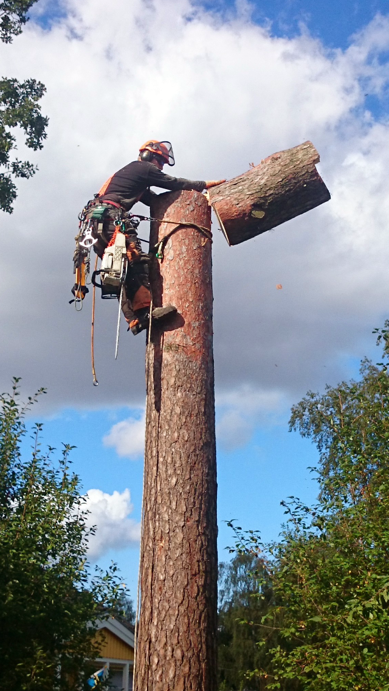
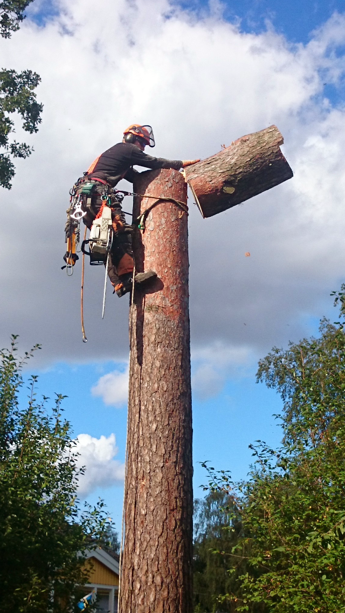
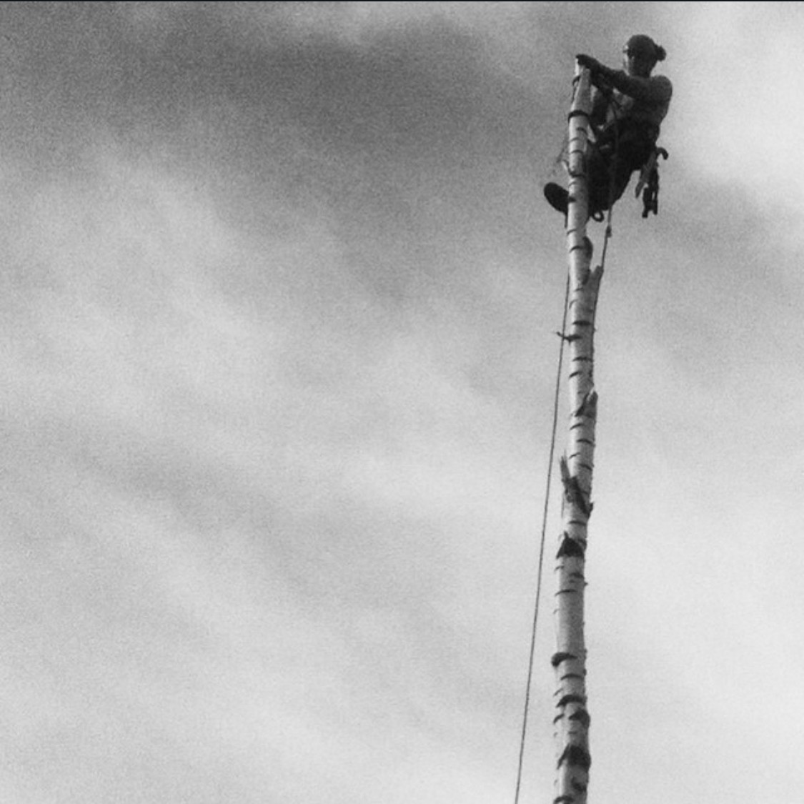
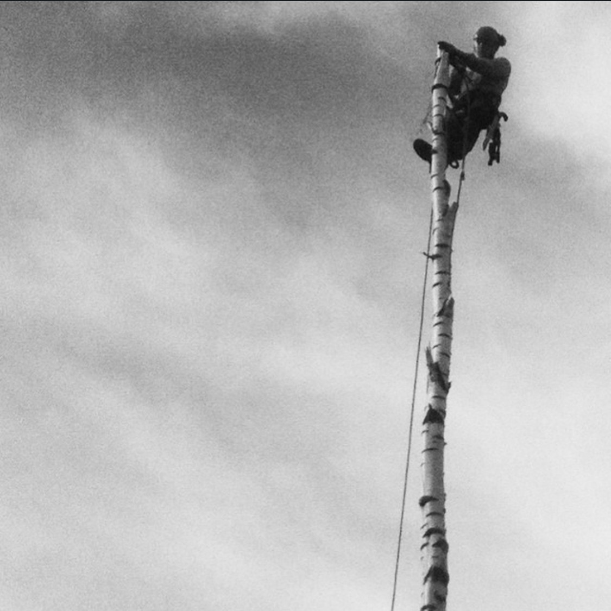

 

Arbetsledare inom bygg – 5 års erfarenhet av projektledning och teamansvar
Jag arbetade som arbetsledare inom bygg, där jag ansvarade för planering, koordinering och genomförande av byggprojekt. Rollen krävde god organisationsförmåga, ledarskap och problemlösning i en dynamisk miljö. Jag hanterade dagliga arbetsflöden, säkerställde att projekt höll tidsplaner och budget samt ledde team med fokus på säkerhet och effektivitet. Under denna tid utvecklade jag min förmåga att fatta snabba och välgrundade beslut samt att kommunicera tydligt med både hantverkare, beställare och andra intressenter.